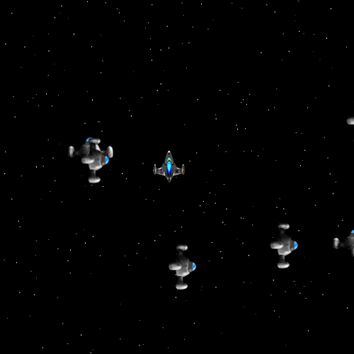

Recent Projects
- Bettergram (demo): A clean and snappy interface to Instagram.com. Uses Redis caching for API feed requests. Uses Backbone.js for front end organization, and Ruby on Rails for back end. Maintains RESTful conventions between client and server side communication. Relies on OAuth 2.0 to talk to Instagram's API.
- First Person Invaders (demo): Unique space game written in Javascript, control your ship and the environment. Rotate space to stay alive and get a high score. Utilizes strong object oriented design for code organization. Allows rotation of context through the use of trigonometry and vector arithmetic.

About Dylan
I don't always code, but when I do I really like it. I code for fun and for work, and most of the rest of the time. Ok, so maybe I do always code. I grew up in upstate New York, and moved to San Francisco to experience the exciting world of Tech where it is hottest. While here I have met a lot of great people and worked on some very cool projects, some of which are above.
One skill I have learned since moving to the city is how to communicate ideas effectively to others. I have done a hefty amount of pair programming with other devlopers, and the ability to talk through ideas and amalmagate several diverging paths of thought is not something that I at first understood. Through lots of practice and some struggle, though, I feel that I have a good grasp on what it takes to work in collaboration with my friends/collegues effectively.
If I had to describe myself as a coder in a word, it would be excited. I enjoy solving problems and working with other people, but more than anything, just building things. For some it is difficult to keep the payoff in mind while working on a bug, or cranking out boilerplate, but for me its motivation. That website or game or server that I a working on is worth whatever I have to do to make it fast, clean, and beautiful.